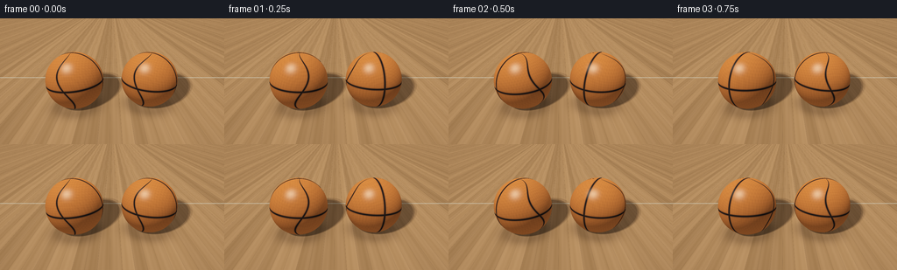
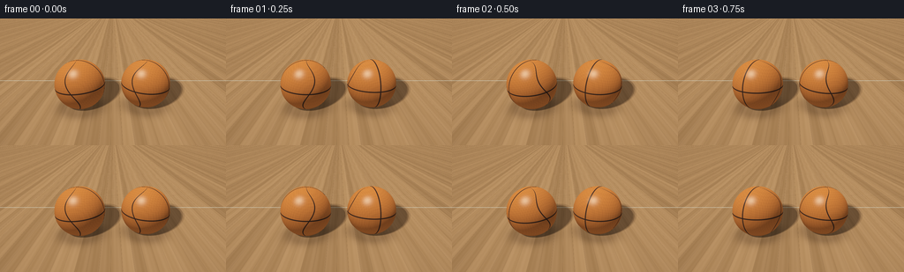
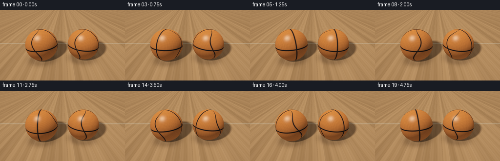
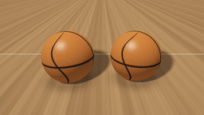
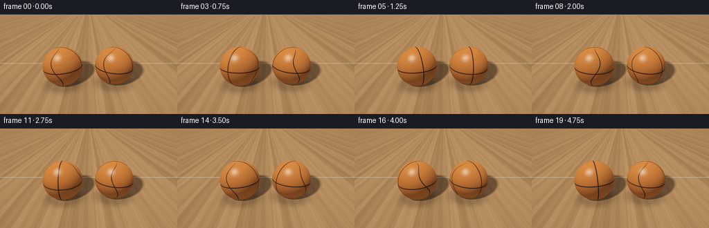

CODING AGENTS AS PIXEL WORLD MODELS
traex/DeepSeek-V4.1-Flash · instance_preservation_0026
点击播放 · 原生 RGB 像素
逐轮保存的候选
回放视频、检查图与代码变化。
每份候选均可单独播放。实际图片检查记录在下方工具轨迹中。
候选 01播放与检查图
点击播放 · 原生 RGB 像素


展开代码变化
--- 上一保存版本
+++ 本次保存版本
@@ -0,0 +1,284 @@
+from pathlib import Path
+
+import numpy as np
+from PIL import Image
+
+import artifact_io
+
+
+WIDTH = 256
+HEIGHT = 144
+FRAMES = 20
+FPS = 4.0
+SUPERSAMPLE = 3
+
+
+def normalize(v):
+ return v / np.maximum(np.linalg.norm(v, axis=-1, keepdims=True), 1e-8)
+
+
+def smoothstep(edge0, edge1, x):
+ t = np.clip((x - edge0) / (edge1 - edge0), 0.0, 1.0)
+ return t * t * (3.0 - 2.0 * t)
+
+
+def rotation_y(angle):
+ c, s = np.cos(angle), np.sin(angle)
+ return np.array([[c, 0.0, s], [0.0, 1.0, 0.0], [-s, 0.0, c]])
+
+
+def rotation_z(angle):
+ c, s = np.cos(angle), np.sin(angle)
+ return np.array([[c, -s, 0.0], [s, c, 0.0], [0.0, 0.0, 1.0]])
+
+
+def wrap_angle(a):
+ return (a + np.pi) % (2.0 * np.pi) - np.pi
+
+
+def sphere_intersection(origin, directions, center, radius):
+ oc = origin - center
+ b = np.sum(directions * oc, axis=-1)
+ c = np.sum(oc * oc, axis=-1) - radius * radius
+ disc = b * b - c
+ hit = disc > 0.0
+ root = np.sqrt(np.maximum(disc, 0.0))
+ t = -b - root
+ hit &= t > 1e-4
+ return hit, t
+
+
+def ball_texture(local_normal):
+ """Return albedo, roughness modulation, and seam mask for a basketball."""
+ x = local_normal[..., 0]
+ y = local_normal[..., 1]
+ z = local_normal[..., 2]
+ longitude = np.arctan2(z, x)
+ latitude = np.arcsin(np.clip(y, -1.0, 1.0))
+
+ # An equator, a straight meridian, and two softly bowed side channels.
+ equator = np.abs(y)
+ meridian = np.abs(z)
+ curve_offset = 0.24 * np.sin(2.7 * latitude)
+ side_a = np.abs(wrap_angle(longitude - 1.5707963 - curve_offset))
+ side_b = np.abs(wrap_angle(longitude + 1.5707963 + curve_offset))
+ seam_distance = np.minimum.reduce([equator, meridian, side_a, side_b])
+
+ channel = 1.0 - smoothstep(0.020, 0.050, seam_distance)
+ channel_core = 1.0 - smoothstep(0.010, 0.026, seam_distance)
+ bevel = (
+ (1.0 - smoothstep(0.048, 0.082, seam_distance))
+ - (1.0 - smoothstep(0.018, 0.046, seam_distance))
+ )
+
+ # Fine molded pebbling. It breaks up highlights without looking like grain.
+ pebble = (
+ np.sin(83.0 * x + 17.0 * y)
+ + np.sin(91.0 * z - 13.0 * x)
+ + np.sin(77.0 * y + 19.0 * z)
+ ) / 3.0
+ fine = 0.5 + 0.5 * np.sin(
+ 143.0 * x + 119.0 * y - 137.0 * z + 1.8 * pebble
+ )
+ leather = 0.90 + 0.075 * pebble + 0.035 * fine
+
+ base = np.empty(local_normal.shape, dtype=np.float64)
+ base[..., 0] = 0.78 * leather
+ base[..., 1] = 0.205 * leather
+ base[..., 2] = 0.035 * leather
+ base *= (1.0 - 0.19 * bevel[..., None])
+ base = base * (1.0 - channel[..., None]) + np.array([0.027, 0.014, 0.010]) * channel[..., None]
+ base *= (1.0 - 0.50 * channel_core[..., None])
+ return base, channel
+
+
+def hash01(values):
+ return np.modf(np.sin(values * 12.9898 + 78.233) * 43758.5453)[0] % 1.0
+
+
+def floor_color(points, camera, sphere_data, light_positions):
+ x = points[..., 0]
+ z = points[..., 2]
+
+ board_width = 0.22
+ board_id = np.floor((x + 4.0) / board_width)
+ board = hash01(board_id + 0.37)
+ local_x = np.mod(x + 4.0, board_width) / board_width
+
+ # Warm maple boards with restrained grain and narrow dark joins.
+ tone = 0.79 + 0.13 * board
+ grain = (
+ 0.030 * np.sin(21.0 * x + 0.55 * np.sin(2.1 * z))
+ + 0.018 * np.sin(67.0 * x - 0.28 * z)
+ + 0.010 * np.sin(151.0 * z + 8.0 * x)
+ )
+ color = np.empty(points.shape, dtype=np.float64)
+ color[..., 0] = (0.51 + 0.075 * board + grain) * tone
+ color[..., 1] = (0.255 + 0.040 * board + 0.55 * grain) * tone
+ color[..., 2] = (0.095 + 0.020 * board + 0.30 * grain) * tone
+ join = smoothstep(0.0, 0.018, local_x) * smoothstep(0.0, 0.018, 1.0 - local_x)
+ color *= (0.66 + 0.34 * join[..., None])
+
+ # A distant free-throw line gives the floor scale without crowding the balls.
+ line_distance = np.abs(z - 5.25)
+ line = 1.0 - smoothstep(0.020, 0.036, line_distance)
+ line *= (0.72 + 0.28 * hash01(np.floor(x * 18.0) + 4.0))
+ color = color * (1.0 - 0.78 * line[..., None]) + np.array([0.83, 0.72, 0.49]) * (0.78 * line[..., None])
+
+ # Soft area-light shadow, traced against both balls.
+ shadow_visibility = np.zeros(x.shape, dtype=np.float64)
+ for light in light_positions:
+ to_light = light[None, :] - points
+ distance = np.linalg.norm(to_light, axis=-1)
+ direction = to_light / distance[..., None]
+ visible = np.ones(x.shape, dtype=np.float64)
+ for center, radius, _, _ in sphere_data:
+ hit, t = sphere_intersection(points, direction, center, radius)
+ visible *= ~(hit & (t < distance - 0.015))
+ shadow_visibility += visible
+ shadow_visibility /= len(light_positions)
+ shadow = 0.25 + 0.75 * shadow_visibility
+ color *= shadow[..., None]
+
+ # Contact ambient occlusion keeps the balls visually planted.
+ ao = np.ones(x.shape, dtype=np.float64)
+ for center, radius, _, _ in sphere_data:
+ dx = x - center[0]
+ dz = z - center[2]
+ radial = np.sqrt(dx * dx + dz * dz)
+ ao *= 1.0 - 0.42 * np.exp(-np.square(np.maximum(radial - 0.40, 0.0) / 0.24))
+ color *= ao[..., None]
+
+ # Faint mirror-like sheen from the polished court.
+ reflected = camera - points
+ reflected = normalize(reflected * np.array([1.0, -1.0, 1.0]))
+ reflection = np.zeros_like(color)
+ reflection_weight = np.zeros(x.shape, dtype=np.float64)
+ nearest_t = np.full(x.shape, np.inf)
+ for index, (center, radius, angle, axis) in enumerate(sphere_data):
+ hit, t = sphere_intersection(points, reflected, center, radius)
+ use = hit & (t < nearest_t)
+ if np.any(use):
+ q = points[use] + reflected[use] * t[use, None]
+ normal = normalize(q - center)
+ local = normal @ rotation_z(axis[2]) @ rotation_y(angle) @ rotation_z(axis[0])
+ local = normalize(local)
+ albedo, _ = ball_texture(local)
+ ndl = np.maximum(normal @ normalize(np.array([-0.42, 0.82, -0.38])), 0.0)
+ reflected_shade = albedo * (0.30 + 0.70 * ndl[..., None])
+ reflection[use] = reflected_shade
+ reflection_weight[use] = 0.10
+ nearest_t[use] = t[use]
+ color = color * (1.0 - reflection_weight[..., None]) + reflection * reflection_weight[..., None]
+ return color
+
+
+def make_camera():
+ origin = np.array([0.0, 2.30, -0.55])
+ target = np.array([0.0, 0.50, 3.75])
+ forward = normalize(target - origin)
+ right = normalize(np.cross(np.array([0.0, 1.0, 0.0]), forward))
+ up = normalize(np.cross(forward, right))
+ vertical_fov = np.deg2rad(36.0)
+ tan_half = np.tan(vertical_fov * 0.5)
+ return origin, forward, right, up, tan_half
+
+
+def render_frame(frame_index, sphere_data, light_positions, samples):
+ render_w = WIDTH * SUPERSAMPLE
+ render_h = HEIGHT * SUPERSAMPLE
+ origin, forward, right, up, tan_half = make_camera()
+
+ yy, xx = np.mgrid[0:render_h, 0:render_w].astype(np.float64)
+ sx = (2.0 * xx + 1.0) / render_w - 1.0
+ sy = 1.0 - (2.0 * yy + 1.0) / render_h
+ aspect = WIDTH / HEIGHT
+ directions = normalize(
+ forward[None, None, :]
+ + right[None, None, :] * (sx[..., None] * tan_half * aspect)
+ + up[None, None, :] * (sy[..., None] * tan_half)
+ )
+
+ background_t = np.clip(sy * 0.5 + 0.5, 0.0, 1.0)
+ image = np.empty((render_h, render_w, 3), dtype=np.float64)
+ image[..., 0] = 0.030 + 0.055 * background_t
+ image[..., 1] = 0.028 + 0.038 * background_t
+ image[..., 2] = 0.030 + 0.028 * background_t
+
+ floor_t = np.where(directions[..., 1] < -1e-6, -origin[1] / directions[..., 1], np.inf)
+ floor_hit = np.isfinite(floor_t) & (floor_t > 1e-4)
+ if np.any(floor_hit):
+ floor_points = origin[None, None, :] + directions[floor_hit] * floor_t[floor_hit, None]
+ image[floor_hit] = floor_color(floor_points, origin, sphere_data, light_positions)
+
+ depth = np.where(floor_hit, floor_t, np.inf)
+ hit_any = np.zeros(floor_t.shape, dtype=bool)
+ for index, (center, radius, angle, axis) in enumerate(sphere_data):
+ hit, t = sphere_intersection(origin, directions, center, radius)
+ choose = hit & (t < depth)
+ if not np.any(choose):
+ continue
+ depth[choose] = t[choose]
+ hit_any[choose] = True
+
+ points = origin + directions[choose] * t[choose, None]
+ normal = normalize(points - center)
+ local = normal @ rotation_z(axis[2]) @ rotation_y(angle) @ rotation_z(axis[0])
+ local = normalize(local)
+ albedo, channel = ball_texture(local)
+
+ view = -directions[choose]
+ key = normalize(np.array([-0.38, 0.88, -0.30]))
+ ndl = np.maximum(normal @ key, 0.0)
+ half_vec = normalize(key[None, :] + view)
+ ndh = np.maximum(np.sum(normal * half_vec, axis=-1), 0.0)
+ specular = np.power(ndh, 74.0) * (0.32 + 0.18 * (1.0 - channel))
+
+ rim_dir = normalize(np.array([0.55, 0.30, 0.72]))
+ rim = np.power(np.maximum(np.sum(normal * rim_dir, axis=-1), 0.0), 2.0)
+ sky = 0.18 + 0.25 * np.maximum(normal[..., 1], 0.0)
+ warm_bounce = 0.12 * np.maximum(-normal[..., 1], 0.0)
+ shade = albedo * (sky[..., None] + 0.86 * ndl[..., None] + warm_bounce[..., None])
+ shade += np.array([1.00, 0.77, 0.54]) * specular[..., None]
+ shade += albedo * (0.20 * rim[..., None])
+
+ # Darken the bottom few pixels where the sphere meets the court.
+ contact = smoothstep(0.0, 0.22, points[:, 1])
+ shade *= (0.52 + 0.48 * contact[:, None])
+ image[choose] = shade
+
+ # Restrained vignetting and a gentle filmic shoulder.
+ vignette = 1.0 - 0.17 * ((sx * 0.72) ** 2 + (sy * 0.55) ** 2)
+ image *= vignette[..., None]
+ image = 1.0 - np.exp(-1.30 * image)
+ image = np.power(np.clip(image, 0.0, 1.0), 1.0 / 2.2)
+
+ frame = Image.fromarray(np.uint8(np.clip(image * 255.0 + 0.5, 0.0, 255.0)))
+ frame = frame.resize((WIDTH, HEIGHT), Image.Resampling.LANCZOS)
+ return np.asarray(frame, dtype=np.uint8)
+
+
+def main():
+ case_dir = Path(__file__).resolve().parent
+ lights = []
+ for u, v in [(-0.70, -0.50), (0.0, -0.85), (0.70, -0.35), (-0.45, 0.45), (0.40, 0.55), (0.0, 0.0)]:
+ lights.append(np.array([-2.45 + 0.36 * u, 4.65 + 0.12 * v, -1.65 + 0.34 * v]))
+
+ frames = []
+ for frame_index in range(FRAMES):
+ time = frame_index / FPS
+ sphere_data = [
+ (np.array([-0.83, 0.635, 3.48]), 0.635, 2.0 * np.pi * 1.72 * time + 0.18,
+ np.array([0.08, 0.00, 0.00])),
+ (np.array([0.84, 0.625, 3.57]), 0.625, -2.0 * np.pi * 1.48 * time + 0.55,
+ np.array([-0.05, 0.00, 0.00])),
+ ]
+ frames.append(render_frame(frame_index, sphere_data, lights, SUPERSAMPLE))
+ print(f"rendered {frame_index + 1:02d}/{FRAMES}", flush=True)
+
+ artifact_io.save(frames, case_dir)
+ print(f"saved {FRAMES} frames to {case_dir}", flush=True)
+
+
+if __name__ == "__main__":
+ main()
候选 02播放与检查图
点击播放 · 原生 RGB 像素


展开代码变化
--- 上一保存版本
+++ 本次保存版本
@@ -64,11 +64,11 @@
side_b = np.abs(wrap_angle(longitude + 1.5707963 + curve_offset))
seam_distance = np.minimum.reduce([equator, meridian, side_a, side_b])
- channel = 1.0 - smoothstep(0.020, 0.050, seam_distance)
- channel_core = 1.0 - smoothstep(0.010, 0.026, seam_distance)
+ channel = 1.0 - smoothstep(0.012, 0.030, seam_distance)
+ channel_core = 1.0 - smoothstep(0.005, 0.014, seam_distance)
bevel = (
- (1.0 - smoothstep(0.048, 0.082, seam_distance))
- - (1.0 - smoothstep(0.018, 0.046, seam_distance))
+ (1.0 - smoothstep(0.030, 0.055, seam_distance))
+ - (1.0 - smoothstep(0.012, 0.029, seam_distance))
)
# Fine molded pebbling. It breaks up highlights without looking like grain.
@@ -86,9 +86,9 @@
base[..., 0] = 0.78 * leather
base[..., 1] = 0.205 * leather
base[..., 2] = 0.035 * leather
- base *= (1.0 - 0.19 * bevel[..., None])
- base = base * (1.0 - channel[..., None]) + np.array([0.027, 0.014, 0.010]) * channel[..., None]
- base *= (1.0 - 0.50 * channel_core[..., None])
+ base *= (1.0 - 0.12 * bevel[..., None])
+ base = base * (1.0 - channel[..., None]) + np.array([0.035, 0.017, 0.012]) * channel[..., None]
+ base *= (1.0 - 0.34 * channel_core[..., None])
return base, channel
@@ -167,15 +167,15 @@
ndl = np.maximum(normal @ normalize(np.array([-0.42, 0.82, -0.38])), 0.0)
reflected_shade = albedo * (0.30 + 0.70 * ndl[..., None])
reflection[use] = reflected_shade
- reflection_weight[use] = 0.10
+ reflection_weight[use] = 0.16
nearest_t[use] = t[use]
color = color * (1.0 - reflection_weight[..., None]) + reflection * reflection_weight[..., None]
return color
def make_camera():
- origin = np.array([0.0, 2.30, -0.55])
- target = np.array([0.0, 0.50, 3.75])
+ origin = np.array([0.0, 2.38, -0.78])
+ target = np.array([0.0, 0.48, 3.95])
forward = normalize(target - origin)
right = normalize(np.cross(np.array([0.0, 1.0, 0.0]), forward))
up = normalize(np.cross(forward, right))
@@ -268,9 +268,9 @@
for frame_index in range(FRAMES):
time = frame_index / FPS
sphere_data = [
- (np.array([-0.83, 0.635, 3.48]), 0.635, 2.0 * np.pi * 1.72 * time + 0.18,
+ (np.array([-0.78, 0.590, 3.52]), 0.590, 2.0 * np.pi * 1.72 * time + 0.18,
np.array([0.08, 0.00, 0.00])),
- (np.array([0.84, 0.625, 3.57]), 0.625, -2.0 * np.pi * 1.48 * time + 0.55,
+ (np.array([0.78, 0.580, 3.60]), 0.580, -2.0 * np.pi * 1.48 * time + 0.55,
np.array([-0.05, 0.00, 0.00])),
]
frames.append(render_frame(frame_index, sphere_data, lights, SUPERSAMPLE))
可观测工具轨迹
实际执行的命令与返回图片。
命令 1exit 0
/bin/bash -c "pwd && rg --files -g '"'!**/.git/**'"' | sed -n '1,160p'"
命令 2exit 0
/bin/bash -c "printf '%s\\n' '--- prompt.txt ---'; sed -n '1,240p' prompt.txt; printf '%s\\n' '--- GENERATION_RULES.md ---'; sed -n '1,280p' GENERATION_RULES.md; printf '%s\\n' '--- task_spec.json ---'; sed -n '1,280p' task_spec.json"
命令 3exit 0
/bin/bash -c "find . -maxdepth 2 -type f -printf '%p %s bytes\\n' | sort | sed -n '1,200p'"
命令 4exit 0
/bin/bash -c "sed -n '1,260p' artifact_io.py"
命令 5exit 0
/bin/bash -c "python - <<'PY'
import numpy, PIL
print('numpy', numpy.__version__)
print('PIL', PIL.__version__)
PY"命令 6exit 0
/bin/bash -c 'command -v ffmpeg || true; git status --short'
命令 7exit 1
/bin/bash -c 'python generate.py'
命令 8exit 1
/bin/bash -c 'python generate.py'
命令 9exit 0
/bin/bash -c 'python generate.py'
命令 10exit 0
/bin/bash -c 'python generate.py'
命令 11exit 0
/bin/bash -c "python - <<'PY'
import json
from pathlib import Path
import numpy as np
from PIL import Image
p=Path('.')
data=np.load(p/'pixels.npz')['pixels']
print('pixels.npz:', data.shape, data.dtype)
frames=[np.asarray(Image.open(p/'frames'/f'{i:02d}.png')) for i in range(20)]
print('png sequence:', len(frames), frames[0].shape, frames[0].dtype)
print('frame changes (mean abs):', [round(float(np.mean(np.abs(frames[i].astype(float)-frames[i-1].astype(float)))),3) for i in range(1,20)])
print('index.html:', (p/'index.html').stat().st_size, 'bytes')
print('inspection.png:', Image.open(p/'inspection.png').size)
PY
python -m py_compile generate.py
find frames -maxdepth 1 -type f | wc -l"命令 12exit 0
/bin/bash -c 'git status --short -- generate.py frames inspection.png index.html pixels.npz transition_check.png 2>/dev/null || true; ls -lh generate.py inspection.png index.html pixels.npz'
视觉工具实际返回图片 1

视觉工具实际返回图片 2

视觉工具实际返回图片 3

保存候选 2 份；完成命令 12 次；可验证图片返回 3 张。原始 API 响应与完整日志保留在本地。